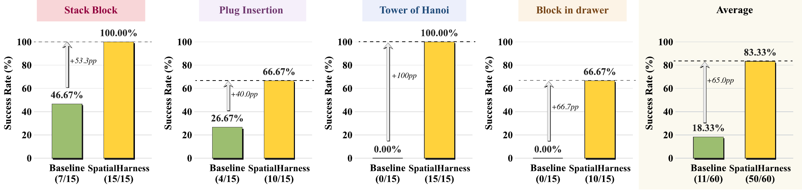
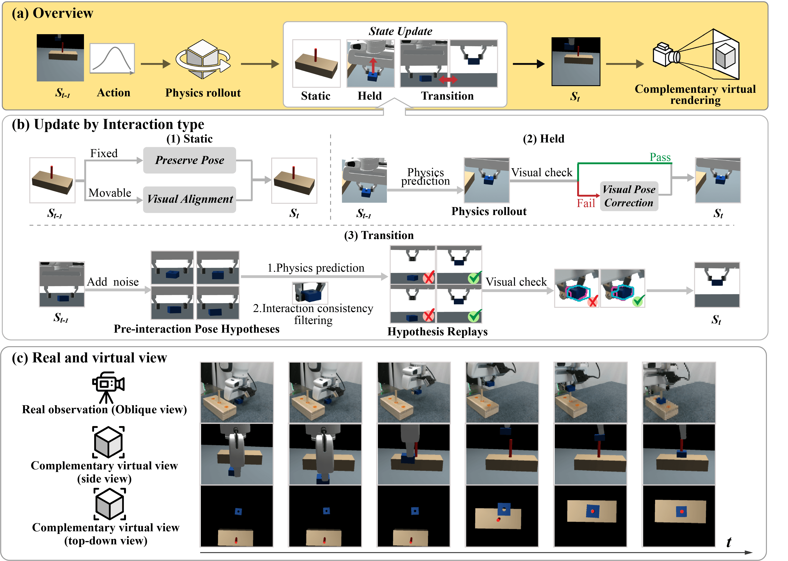

SpatialHarness
Test-Time Spatial Scaffolding
for Fine Robotic Manipulation
1 College of Computer Science and Artificial Intelligence, Fudan University2 Singapore Management University3 Institute of Trustworthy Embodied AI, Fudan University
† Corresponding author
1. Problem Definition
Multimodal foundation models can now generate robot actions directly from visual observations and language instructions, and use execution feedback to adjust subsequent decisions. However, these models still struggle to perform fine manipulation reliably in tasks such as insertion, stacking, and precise placement.
We want to ask a question: how can we improve a robot's observations of task-critical spatial relationships at test time to make fine manipulation more reliable, without retraining the policy or changing the existing physical camera setup?
2. Motivation: Fine Manipulation Requires Sufficient Spatial Evidence
To complete a task, the robot must understand the goal and assess specific geometric relationships. These include whether the plug's position and orientation match the socket, whether an object's hole aligns with the target peg, and whether the gripper has actually grasped the drawer handle. Occlusion or viewing direction can make these relationships hard to discern from fixed cameras, especially when the gripper and object are nearly in contact.
Some manipulation failures may therefore result from insufficient spatial evidence. Even when a model has the relevant reasoning and manipulation capabilities, its current observations may not support accurate judgments. We therefore treat spatial observability as a key consideration for embodied harnesses. The aim is to provide the same policy with additional observations that clearly reveal key geometric relationships, allowing it to make fuller use of its existing capabilities.
3. Method Overview: SpatialHarness
At test time, SpatialHarness maintains a simulated scene synchronized with real-world execution and uses it to provide the policy with additional spatial information.
Before execution, the system starts from the task's success conditions and identifies the spatial relationships that must be assessed for success. It works backward from these relationships to determine virtual viewpoints that can reveal them. During execution, it continuously updates the scene using measured robot motion and real-world observations. The frozen multimodal policy receives rendered images from the additional viewpoints, object poses, and rendering reliability information. The policy combines these inputs with its existing real-world observations to generate actions, forming a continuously updated closed loop.
4. Experiment Results
We evaluate SpatialHarness on four real-robot tasks: block stacking, plug insertion, Tower of Hanoi, and block in drawer. Both methods use GPT-6 Astra (low reasoning effort) as the policy model, with the same physical camera configuration and control protocol. Each method is evaluated over 15 trials per task. Each trial consists of 20 interaction rounds.
With SpatialHarness, the average success rate across the four tasks increases from 18.33% to 83.33%. The success rate for plug insertion increases from 26.67% to 66.67%, while that for Tower of Hanoi increases from 0% to 100%. These results indicate that improving spatial observability at test time can help the same multimodal policy perform fine manipulation more reliably.
Real-world Tasks Evaluation

Task Demonstrations
Excerpts from four tasks. See Demos for complete runs.
SPATIALHARNESS
Method
1. Overall Workflow
SpatialHarness provides a frozen multimodal policy with spatial context corresponding to the current execution state: complementary virtual views, object poses, and rendering reliability information. At each decision step, the policy combines this context with task instructions, real camera observations, robot state, and execution feedback to generate robot actions through tool calls.
For environment modeling and configuration, the multimodal model builds simulation assets and environments, reasons about spatial constraints, generates programs to check them, and configures virtual viewpoints. As the manipulation policy, the same model generates robot actions. The harness executes these programs, advances the physics simulation, synchronizes the scene using real-world observations, and renders the additional views needed at the next step.

2. Interaction-Aware Scene Synchronization
The usefulness of complementary virtual views depends on how accurately the simulated scene reflects the real environment. When the scene evolves through physics simulation alone, errors in physical parameters and contact modeling gradually introduce discrepancies, particularly during grasping and release. SpatialHarness therefore combines physics-based prediction with two forms of correction. Visual correction uses real images and depth to assess whether the scene matches the real environment. Programmatic correction uses spatial constraints generated by the model to check or adjust candidate states.
2.1 Asset and Initial State Setup
The system first builds CAD models from photographs taken from multiple viewpoints and annotated object dimensions. It renders candidate poses from the real camera's viewing direction and compares their contours and depth with real-world observations, retaining candidates that visually match.
Matching the overall appearance can still mask local geometric errors. The model derives further spatial constraints from object structure and reference geometry in the scene. For example, the pegs in Tower of Hanoi should be above the support plane. The model generates programs to check, make limited adjustments to, or reject candidate poses. Only candidates that pass both spatial constraint checks and visual validation are accepted. Finally, the system completes scene initialization by aligning the simulated robot's pose and gripper width with the measured state.
2.2 Scene State Updates
During execution, the system distinguishes three interaction modes based on the relationship between an object and the gripper: static, continuously held, and transitioning during grasp or release.
Static. Aligned poses are retained for fixed objects. For objects that can move but are currently stationary, the system applies visual correction using new observations. It then confirms the updated state through spatial constraint checks and visual validation.
Held. The system starts from the scene aligned at the previous step. It uses measured joint and gripper motion in the physics simulation to predict the current pose of the held object. It then checks visual agreement and the geometric relationship between the object and gripper. If either check fails, the system corrects the pose using observations from the wrist camera.
Transition. Small errors in position or orientation before contact can lead to different grasping or release outcomes in simulation. The system therefore starts from the simulation state saved at the pre-interaction checkpoint and constructs multiple pre-interaction pose hypotheses. For each candidate, it performs hypothesis replay using the same segment of measured robot motion to obtain a candidate current state. Candidate selection proceeds in two stages. First, interaction consistency filtering uses visible changes in the real interaction to reject branches with inconsistent grasp or release outcomes. It then uses contour matching to compare renderings of the remaining branches across the entire interaction with real wrist-camera observations and selects the closest match. The system accepts the selected branch's full current simulation state. This allows subsequent simulation and virtual views to keep updating from a state consistent with the real interaction.
During execution, the system marks the current rendering as unreliable if it does not match real-world observations closely enough, for example when contour consistency is low. It sends a corresponding signal to the policy model, indicating that information from rendered views should be used with caution. If the rendered content disagrees with real-world observations, the policy model should rely on the real-world observations.
3. Task-Oriented View Selection
Virtual viewpoints are selected before task execution. The model first identifies success conditions from the task instructions. It then combines these conditions with the objects' 3D structure to infer spatial relationships required for success. These may involve relative object positions and orientations, or how local features such as holes, pegs, and plugs fit together. For tasks that mainly involve relationships between whole objects, the system selects two global viewpoints. For tasks that require observing how local features fit together, it selects one local viewpoint and one global viewpoint. The local view shows detailed geometric relationships, while the global view shows the overall scene.
After the system renders candidate views, the model checks whether the relevant objects or parts are visible together and whether key relationships are easy to assess. It also checks whether these viewpoints reveal details that are difficult to discern in the real camera views. When needed, the model iteratively adjusts camera positions, orientations, and framing in simulation. It can also simulate relevant object motions to check visibility during critical stages of the operation. The selected virtual viewpoints remain fixed throughout execution, while their rendered content is continuously updated as the scene is synchronized. This provides the policy with spatial information corresponding to the current manipulation state.
REAL-ROBOT RUNS
Demos
- Execution model
- Observation input
- Success rate
- Executable steps
Success rates use all 15 trials in each group. The 6 displayed runs use the nearest achievable success/failure ratio, retaining their original outcome labels. All videos are shown at 8× speed.